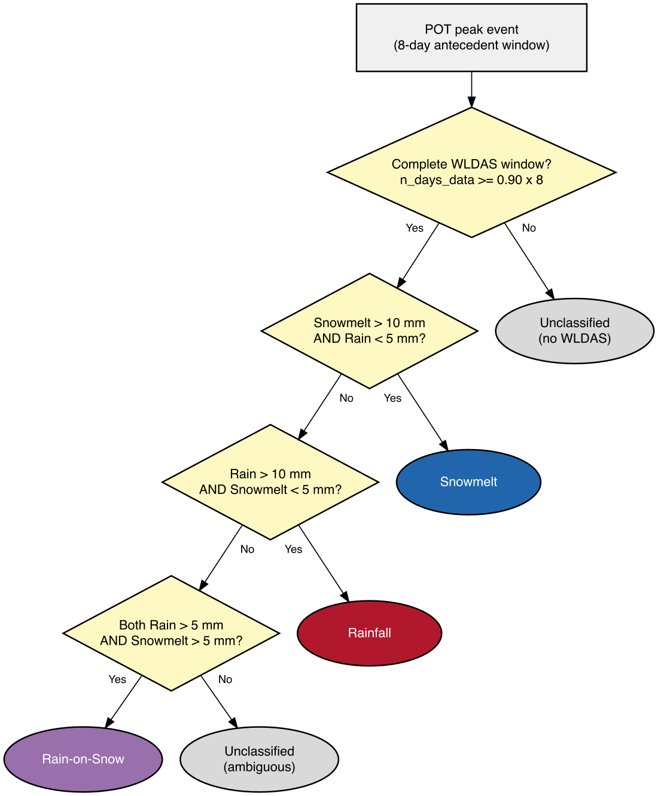
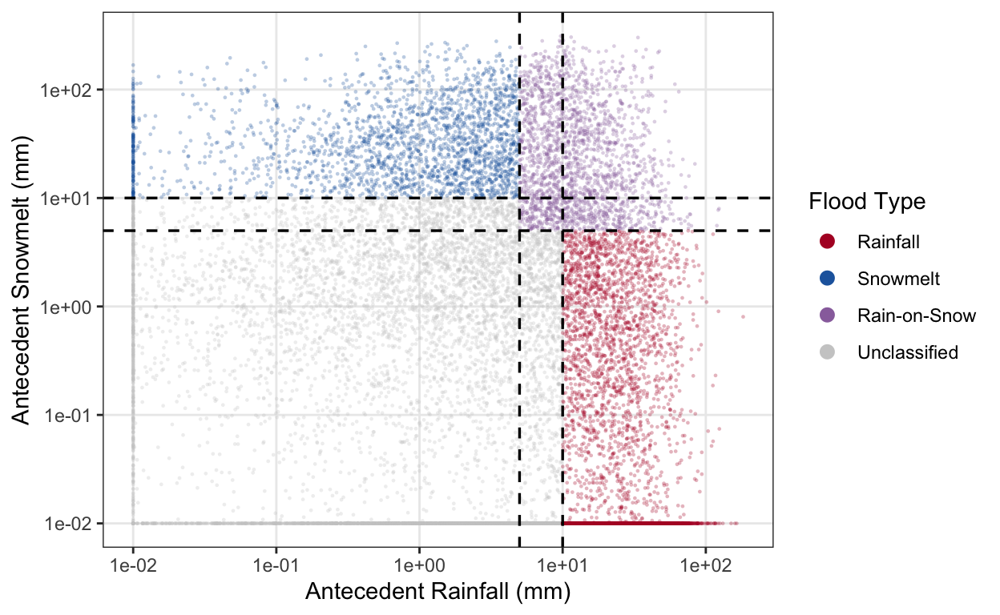
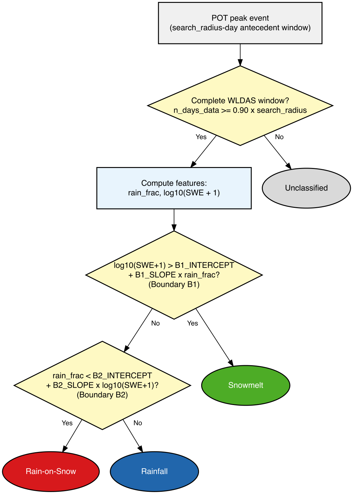
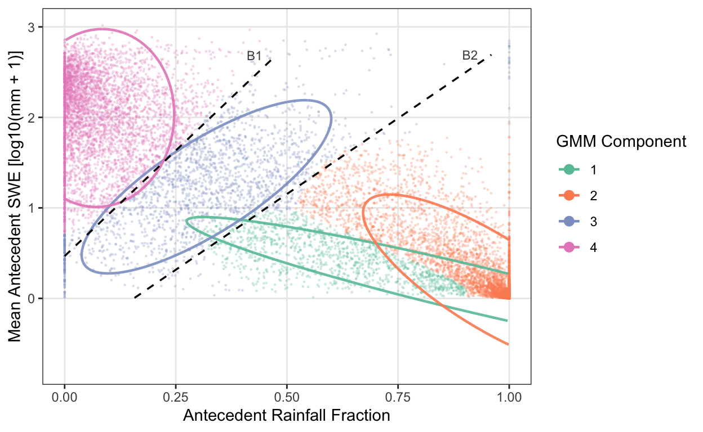
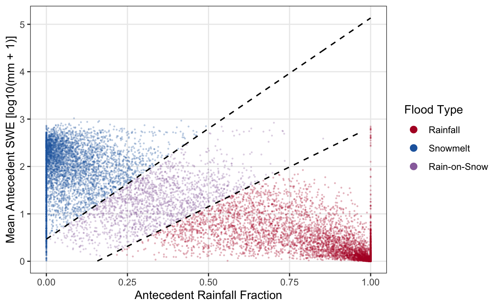
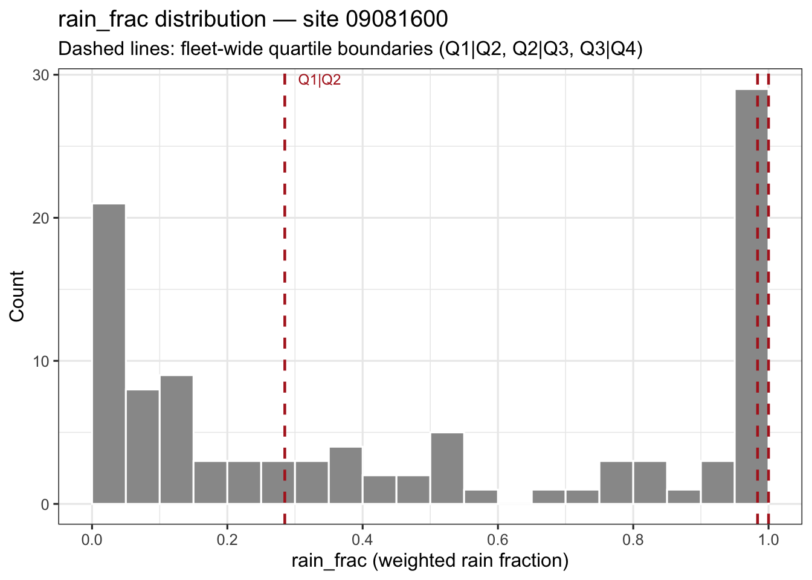
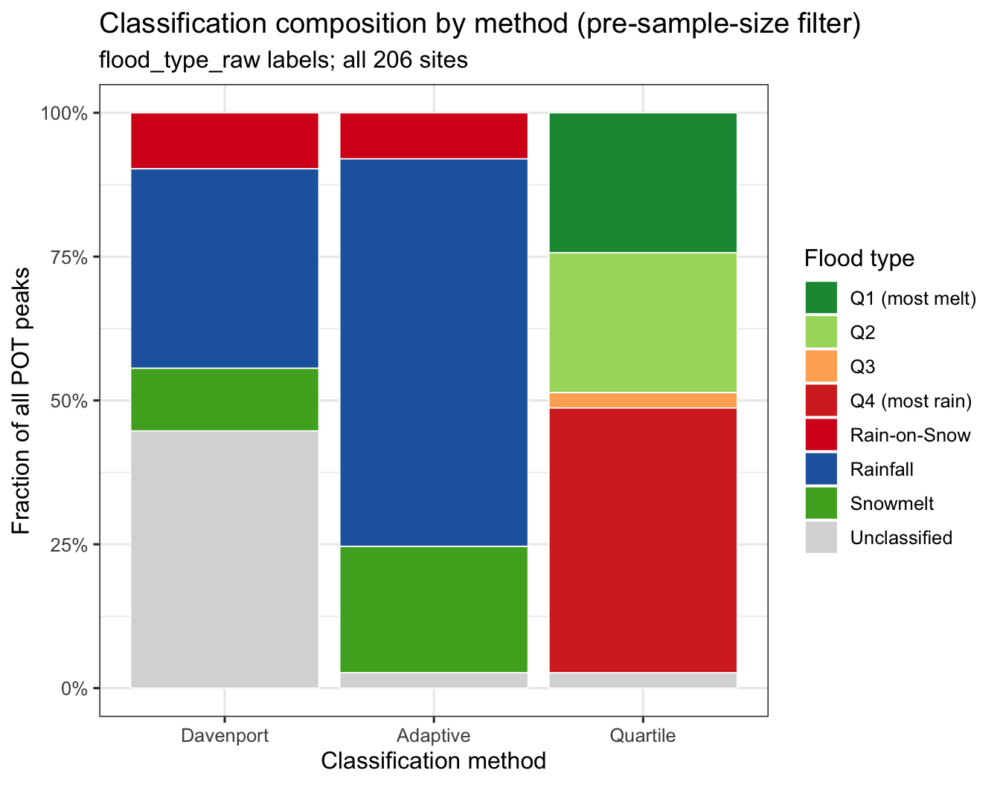
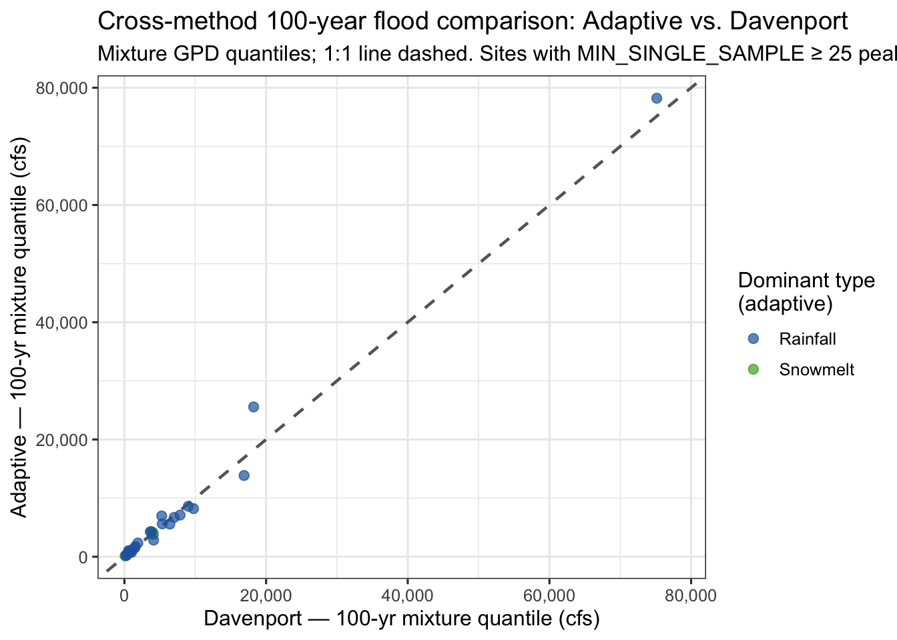

Flood Classification and Frequency Analysis: Methods and Decisions
CoWC FY26 Enhanced Impacts — Technical Report
1. Introduction
Motivation
Floods in the Colorado Rockies originate from at least three distinct hydrometeorological mechanisms: warm-season convective rainfall, spring snowmelt driven by solar radiation, and rain-on-snow (ROS) events where precipitation falls onto a melting snowpack and both fluxes combine to generate runoff. These mechanisms produce flood peaks with systematically different statistical characteristics. Extreme snowmelt floods are constrained by the available snow water equivalent, which limits upper-tail magnitudes, while convective rainfall events are not subject to the same physical bound and can generate more extreme short-duration peaks. Rain-on-snow events compound both fluxes and may produce the most extreme floods of all in high-elevation basins with large seasonal snowpacks.
Classical flood frequency analysis (FFA) treats all peaks as exchangeable draws from a single population and fits a single distribution to the merged record. When flood-generating mechanisms are systematically different, this aggregation conflates populations with different distributional properties, biasing both the fitted distribution and the resulting quantile estimates. The mixture FFA framework of Yu et al. (2022) addresses this by fitting separate distributions to peaks of each process type and constructing a mixture survival function whose component CDFs are multiplied. The resulting mixture curve is formally motivated by the assumption that a flood exceeding a given level must arise from one of the contributing processes, and that exceedance by each process is approximately independent conditional on flood type.
This report documents the classification and FFA pipeline developed for the CoWC FY26 Enhanced Impacts project, following the Yu et al. (2022) framework. It describes the three classification methods implemented, the methodological decisions made during development, and the key results.
Study Area and Site Selection
The study covers Colorado streamgages from the GAGES-II dataset, including both reference (minimally disturbed) and non-reference sites. Site metadata — including drainage area, mean basin elevation, upstream dam storage, and GAGES-II classification — were assembled from the standard GAGES-II attribute tables. Sites were flagged as regulated if upstream normal storage exceeded 1,000 acre-feet (1.233 Mm³), following the criterion used by Davenport et al. (2020). Of the 206 Colorado sites in the dataset, 63 are unregulated and are the primary sample for FFA. The full 206-site fleet is used for classification and diagnostic analysis.
Data
USGS discharge. Daily maximum discharge was derived from USGS unit (15-minute) streamflow data accessed via the USGS Water Data API using the dataRetrieval R package. Peaks over threshold (POT) were identified using a per-site threshold equal to the 50th percentile of the daily maximum flow record, which also serves as the GPD location parameter \(\mu\) in downstream frequency fitting following Yu et al. (2022). Peaks were declustered using the minimum time-separation criterion from Livneh et al. (2024): \(\theta = 5 + \ln(1.6092 \cdot A)\) days, where \(A\) is drainage area in km². The output contains approximately 21,000 distinct peaks across all 206 sites.
WLDAS hydrometeorological drivers. Antecedent rainfall and snowmelt were obtained from the Western Land Data Assimilation System (WLDAS), a Noah-MP land surface model product at 0.01° (~1 km) spatial resolution. Daily NetCDF files were processed using exactextractr, extracting basin-mean values for rainfall flux, snowfall flux, snowmelt flux (from the snowmelt parameterization in Noah-MP), and snow water equivalent (SWE). Flux variables were converted from kg m\(^{-2}\) s\(^{-1}\) to mm/day. Outputs were written as date-partitioned Parquet files and processed into 60-day accumulation curves for each POT peak.
2. Classification Approaches Overview
Three flood classification methods were implemented and compared. Each method takes the same input — basin-averaged WLDAS antecedent fluxes over a per-peak antecedent window — and assigns each POT peak to one of three flood types (Rainfall, Snowmelt, Rain-on-Snow) or to an Unclassified category.
The Davenport et al. (2020) fixed threshold method applies absolute accumulation thresholds (rain > 10 mm, snowmelt > 10 mm, with ambiguous zones at 5–10 mm) to 8-day antecedent totals. This method is the primary baseline from the literature and provides direct comparability with prior work on the Colorado River basin.
The adaptive rain-fraction method (the primary analysis method) replaces raw accumulation totals with a scale-invariant rain fraction metric computed over a site-specific antecedent window derived from the basin’s characteristic response time. Classification boundaries were derived from a Gaussian mixture model (GMM) in rain fraction × log10(SWE + 1) space, then approximated by sequential logistic regression boundaries for interpretability and operational deployment. This method is the primary classification for FFA.
The quartile method assigns peaks to population-level rain-fraction quartiles as a non-parametric alternative. It makes no claim that the quartile boundaries correspond to physically distinct flood-generating populations; instead, it tests whether continuous process dominance, ranked into quartiles, predicts upper-tail flood behavior. It is retained as a structural sensitivity check alongside the primary methods.
All three methods apply the same Yu et al. (2022) minimum sample size filters (MIN_TYPE_SAMPLE = 20, MIN_SINGLE_SAMPLE = 25) and the same single-sample selection protocol, so differences in FFA output reflect classification structure rather than downstream analytical choices.
3. Fixed Depth Threshold Classification
3.1 Method Description
The Davenport et al. (2020) method classifies POT peaks using the total accumulated rainfall and snowmelt over a fixed 8-day antecedent window preceding each peak. The thresholds were calibrated using station data from the Colorado River basin and are intended to capture the dominant hydrometeorological forcing type. A peak is assigned to Snowmelt if antecedent snowmelt accumulation exceeds 10 mm and antecedent rainfall falls below 5 mm; to Rainfall if antecedent rainfall exceeds 10 mm and snowmelt falls below 5 mm; and to Rain-on-Snow if both fluxes exceed 5 mm simultaneously. Peaks that do not meet any of these criteria — including peaks with ambiguous intermediate signals or insufficient WLDAS coverage — are classified as Unclassified.
The fixed 8-day window was chosen to capture the precipitation-to-runoff lag for typical western US watersheds. However, hydrologic response time scales vary systematically with basin size: small headwater catchments respond within hours, while large basins may require many days for a precipitation signal to propagate to the outlet. The Livneh et al. (2024) peak independence criterion encodes this scaling explicitly as \(\theta = 5 + \ln(1.6092 \cdot A)\), where \(A\) is drainage area in km². Across Colorado GAGES-II sites, \(\theta\) ranges from roughly 8 to 17 days, with most sites between 10 and 15 days. For sites where \(\theta > 8\), the Davenport 8-day window discards antecedent forcing information that the independence criterion itself identifies as hydrologically relevant.
3.2 Decision Tree

Figure X. Classification space for the fixed depth threshold approach. Points represent individual peak-over-threshold events colored by pre-demotion flood type (decision tree output prior to minimum sample size filtering). Dashed lines indicate the 5 mm and 10 mm boundaries for antecedent rainfall (vertical) and snowmelt (horizontal) used to assign events to Rainfall, Snowmelt, and Rain-on-Snow classes. Left panel: regulated sites; right panel: unregulated sites.
3.3 Rationale for Retaining Literature Thresholds
During development, FFA-based threshold optimization was attempted: candidate threshold values were varied across a grid, and the resulting FFA quantile estimates were evaluated for consistency across sites. This optimization proved inconclusive for two reasons. First, quantile estimates at 100-year return periods are sensitive to small changes in sample composition, introducing sampling noise that obscures the threshold signal. Second, and more fundamentally, the cross-type mass balance comparison on which optimization was implicitly based is not valid: rainfall-dominated peaks and snowmelt-dominated peaks occur in hydrologically distinct basin states (saturated versus frozen soils, respectively), and their runoff ratios reflect entirely different infiltration and curve-number regimes. Adjusting thresholds to equalize runoff ratios across types would not improve classification; it would conflate two physically distinct processes.
The thresholds of Davenport et al. (2020) are well-established in the Colorado basin literature and were derived from a principled analysis of co-occurrence patterns in the WLDAS record. They reproduce a reasonable classification composition across Colorado sites, with snowmelt-dominated events concentrated in high-elevation basins and rainfall events more common at lower elevations — consistent with the known climatological structure of the region. For these reasons, the Davenport thresholds are retained without modification in Script 6a.
4. Adaptive Classification
4.1 Method Description
The adaptive classification method (Script 6b) replaces the Davenport fixed accumulation thresholds with a scale-invariant feature — the weighted rain fraction (rain_frac) — computed over a site-specific antecedent window. The antecedent window length for each site is set equal to the Livneh et al. (2024) peak-independence criterion \(\theta = \lceil 5 + \ln(1.6092 \cdot A) \rceil\) days (the search_radius parameter), so that the window defining event independence also defines the window over which antecedent forcing is accumulated.
The rain fraction is defined as:
\[\text{rain\_frac} = \frac{\sum_{d=1}^{W} \tilde{r}_d}{\sum_{d=1}^{W} (\tilde{r}_d + \tilde{m}_d)}\]
where \(W\) is search_radius, and \(\tilde{r}_d\), \(\tilde{m}_d\) are rainfall and snowmelt flux on day \(d\) set to zero if below a noise floor of 0.1 mm/day. Days where both fluxes fall below the noise floor contribute nothing to either the numerator or denominator. The resulting metric is bounded on \([0, 1]\) and comparable across basins regardless of climatological flux magnitude.
A second feature, mean basin SWE over the antecedent window (swe_mean_mm), was added following GMM analysis (Section 4.4) to improve separation of the Snowmelt and Rain-on-Snow populations in the two-dimensional feature space. The full classification uses rain_frac and log10(swe_mean_mm + 1) jointly.
4.2 Decision Tree

Derived boundary coefficients:
B1_INTERCEPT = 0.4671 B1_SLOPE = 4.6660
B2_INTERCEPT = 0.1556 B2_SLOPE = 0.2987
Figure X. Gaussian mixture model (GMM) fit (G = 4, EEV covariance structure) in the antecedent rainfall fraction × log10(SWE + 1) feature space. Points represent data-sufficient peak-over-threshold events, colored by GMM component assignment. Ellipses show 95% confidence regions for each component. The GMM reveals that flood events separate along both the rainfall fraction and SWE dimensions, motivating a bivariate rather than univariate classification boundary. G = 4 was selected over G = 3: without a second rainfall sub-component, the three-component optimizer expands the snowmelt component into ROS territory, shifts the ROS centroid to median rain_frac ≈ 0.67, and produces a B1 boundary with a physically nonsensible negative slope; the fourth component absorbs the rainfall sub-structure and frees snowmelt and ROS to occupy their natural regions. The dashed boundaries B1 (snowmelt/ROS, left) and B2 (ROS/rainfall, right) are derived at run time via linear SVM on interior events (0.01 < rain_frac < 0.99), with decision-function weights recovered by linear regression to avoid sign ambiguity (two-class accuracy: B1 = 98.3%, B2 = 97.4%); this replaces the previously hardcoded coefficients from a prior interactive session. The four-component solution reveals sub-structure within the rainfall-dominated zone (lower right), which is collapsed into a single Rainfall class as it reflects meteorological variation within rainfall-driven events rather than a distinct flood generation mechanism.

Figure X. Classification space for the adaptive rain-fraction method. Points represent individual peak-over-threshold events colored by pre-demotion flood type (decision tree output prior to minimum sample size filtering). Dashed lines indicate the B1 boundary (separating Snowmelt from other classes) and the B2 boundary (separating Rain-on-Snow from Rainfall). Coverage failures (unclassified events with zero total antecedent flux) are excluded from this plot as they have no defined antecedent rainfall fraction. Left panel: regulated sites; right panel: unregulated sites.
4.3 Feature Selection
The adaptive classifier was designed iteratively. An earlier version included a second flux metric, ros_flux_frac — the fraction of total antecedent flux occurring during days where both rainfall and snowmelt were simultaneously above the noise floor. Diagnostic analysis showed this metric to be redundant: because rain_frac is defined as rain / (rain + melt), any peak reaching the Rain-on-Snow branch of the tree already has meaningful contributions from both fluxes by construction. Adding ros_flux_frac as a second feature shifted class boundaries without improving physical interpretability, and it was removed.
An earlier design also included a longer snowmelt accumulation window (SNOW_MULT × search_radius days) to capture slow-melting events that might not be resolved within the shorter search_radius window. Diagnostic analysis of snowmelt classification fractions across multipliers 1×–5× showed these fractions to be essentially flat — the short window captures the relevant signal for classification — while the upper tail of rain_frac grows with multiplier length. This is consistent with bleeding across adjacent independent events: as the window expands beyond search_radius, it begins to incorporate rainfall from events that are, by the independence criterion, distinct from the target peak. The longer window was therefore removed. The final classifier uses rain_frac and swe_mean_mm over search_radius as its sole features.
A further question concerned maximum cell versus basin-mean aggregation for spatial ROS detection. An alternative classification using the maximum across grid cells within the basin — rather than the basin mean — inflated the estimated ROS fraction from approximately 34% of peaks (basin-mean) to approximately 2% (cell maximum). The cell-maximum approach detects local co-occurrence of rain and snowmelt at individual pixels, which is stringent enough that nearly all events are excluded from ROS. Basin-mean aggregation was retained as the primary approach.
4.4 GMM Boundary Derivation
To move beyond judgment-based classification boundaries, a Gaussian mixture model was fit to the joint distribution of rain_frac and log10(swe_mean_mm + 1) across all data-sufficient POT peaks, using the mclust package. The optimal solution under the BIC criterion was a G = 4 component EEV (equal eigenvalue, equal volume) model. Inspection of the component structure showed that components 1 and 2 co-located in the high-rain_frac, low-SWE region (representing two rainfall-event sub-populations, perhaps distinguished by rainfall seasonality) and were merged to form the Rainfall population; component 4 occupied the high-SWE, low-rain_frac region (Snowmelt); and component 3 occupied the intermediate range (Rain-on-Snow). Two logistic regression boundaries approximate the GMM class boundaries for operational use:
- Boundary B1 separates Snowmelt from the other classes: \(\log_{10}(\text{SWE} + 1) = \beta_0^{(1)} + \beta_1^{(1)} \times \text{rain\_frac}\) A peak is assigned to Snowmelt if its log-SWE coordinate lies above this line.
- Boundary B2 separates Rain-on-Snow from Rainfall: \(\text{rain\_frac} = \beta_0^{(2)} + \beta_1^{(2)} \times \log_{10}(\text{SWE} + 1)\) A peak is assigned to Rain-on-Snow if its rain-fraction coordinate lies below this line (after ruling out Snowmelt).
The boundary coefficients are derived at run time by fitting linear SVMs on interior events (0.01 < rain_frac < 0.99) using the merged GMM class labels (Section 4.4). The SVM boundaries reproduce the GMM assignments with two-class accuracy of 98.3% (B1) and 97.4% (B2). ROS distributions are fitted at sites where at least MIN_TYPE_SAMPLE = 20 ROS peaks are available; sites below this threshold have their ROS events absorbed into the remaining classes.
A fixed rain_frac threshold — a vertical boundary in rain_frac × \(\log_{10}(\text{SWE} + 1)\) space — was evaluated as a simpler alternative to the SWE-dependent B2 boundary. Fixed thresholds produced near-zero viable ROS sites across the range 0.10–0.40: genuine ROS events are structurally defined by co-occurrence of non-negligible rainfall and snowmelt, so the ROS population occupies intermediate rain_frac values at elevated SWE — a configuration that a fixed vertical boundary cannot isolate from the rainfall population at low SWE. The SWE-dependent B2 boundary is therefore retained.
4.5 Decision Tree Ordering
A subtle but consequential methodological decision concerns the ordering of the Snowmelt and Rain-on-Snow branches. In an earlier version of the classifier, the Snowmelt branch was evaluated before Rain-on-Snow: any peak with sufficiently high SWE and moderate rain fraction was classified as Snowmelt. Diagnostic analysis showed that approximately 17% of peaks classified as Snowmelt under this ordering had rain_frac values characteristic of genuine rain-burst signatures, consistent with short intense rainfall pulses driving runoff from a snowpack-covered basin. These peaks were being misclassified because their elevation of log-SWE placed them above Boundary B1, even though the short-window antecedent forcing was rain-dominated.
Reversing the ordering — evaluating the Snowmelt branch before the Rain-on-Snow branch, as in the current implementation — resolves this. The Snowmelt criterion is now evaluated first: a peak is Snowmelt only if its log-SWE is high relative to its rain fraction as captured by Boundary B1. Peaks that would otherwise be elevated into Snowmelt by high SWE but have an elevated rain fraction are instead caught by the subsequent Rain-on-Snow branch. This ordering is physically motivated: Snowmelt events are defined by the absence of a meaningful rainfall signal, whereas Rain-on-Snow events require both.
4.6 Noise Floor Decision
No minimum flux threshold is applied to the antecedent window. All peaks with complete WLDAS temporal coverage and non-missing rain_frac are eligible for classification regardless of the magnitude of antecedent rainfall or snowmelt flux. This decision was supported by two diagnostic analyses: (1) a threshold sensitivity sweep varying the flux floor across 0.1–10.0 mm showed that the 100-year mixture GPD quantile was insensitive to the threshold choice across the range 0.1–2.0 mm at the median site; and (2) a peak discharge vs. WLDAS runoff mismatch analysis found no viable data-driven criterion for excluding low-flux peaks — the mismatch metric was near zero for sites above 1,500 m where the analysis is concentrated, and was confounded by runoff efficiency at lower elevations. Unclassified events are therefore limited to peaks outside WLDAS temporal coverage or with NA rain_frac (zero total antecedent flux).
4.7 Unclassified Events
Under the pure coverage criterion, a peak is Unclassified only if fewer than 90% of its search_radius-day antecedent window has WLDAS data. This occurs primarily at two margins: peaks predating the WLDAS archive (a coverage failure) and rare cases of partial windows at the temporal boundaries of the record. The fleet-wide unclassified rate ranges from approximately 15–25% across sites at the median, with the majority attributable to temporal coverage failures rather than to genuine classification ambiguity. The coverage-failure fraction is concentrated at the oldest sites with long records extending before the WLDAS archive start, and is not amenable to improvement through classification logic changes.
5. Quartile Classification
5.1 Motivation
The adaptive classifier assigns peaks to discrete flood-type populations defined by empirical GMM boundaries in a two-dimensional feature space. A natural question is whether the resulting type-level FFA quantiles are sensitive to the specific boundary placement, or whether a purely non-parametric rank-based scheme recovers similar results. The quartile method (Script 6c) addresses this by ignoring the GMM boundaries entirely and instead dividing data-sufficient peaks into four rain-fraction quartile bins based on the fleet-wide distribution of rain_frac. Quartile boundaries are computed from all data-sufficient peaks before any site-level top-\(n\) filtering, so that the quartile labels reflect the full process-dominance spectrum of Colorado flood-generating events rather than the sample-size-filtered subset.
The labels Q1 (most melt-dominated) through Q4 (most rainfall-dominated) are monotone in rain_frac by construction. If process-dominance rank predicts upper-tail flood magnitudes — the core hypothesis of mixture FFA — then the quartile scheme should recover the same cross-method ordering even if the specific type boundaries differ from the adaptive scheme.
5.2 Middle-Bin Sparsity

The middle quartile bins (Q2 and Q3, spanning the 25th–75th percentile of the fleet-wide rain_frac distribution) are structurally sparse at nearly all Colorado GAGES-II sites. Within-site rain_frac distributions are strongly bimodal: the majority of events are either strongly melt-dominated (near 0) or strongly rainfall-dominated (near 1), with very few intermediate events. This bimodality reflects the climatological separation of spring melt seasons from summer convective seasons at most sites, with the intermediate rain-fraction range representing a minority of events that co-occur with remnant snowpack. As a consequence, the quartile scheme effectively reduces to a three-category system in practice — the fleet-wide Q2 and Q3 boundaries fall within the sparse interior of the within-site distribution, leaving Q2 and Q3 with insufficient events to meet the MIN_TYPE_SAMPLE threshold at most sites.
5.3 Retained as Comparison Method
Despite the middle-bin sparsity issue, the quartile method is retained in the analysis as a structural sensitivity comparison. Sites where both the adaptive and quartile methods produce viable Snowmelt and Rainfall fits provide a test of whether the GMM boundary placement affects the 100-year quantile estimates. If the two methods agree on FFA quantiles at the sites where both are viable, this provides evidence that the specific boundary locations in the adaptive method are not driving the results.
6. Minimum Sample Size Thresholds and Single-Sample Alignment
Following Yu et al. (2022), the FFA pipeline applies two minimum sample size thresholds: MIN_TYPE_SAMPLE = 20 (the minimum number of peaks of a given type at a given site required to fit a per-type GPD) and MIN_SINGLE_SAMPLE = 25 (the minimum number of peaks required to fit a single-population GPD). Sites falling below MIN_SINGLE_SAMPLE are excluded from FFA entirely. Types falling below MIN_TYPE_SAMPLE at a given site are demoted to Unclassified and excluded from the per-type fits; the remaining types contribute to the mixture.
A key methodological decision concerns the ordering of the single-sample pool selection relative to the MIN_TYPE_SAMPLE demotion step. The single-sample pool consists of the top-\(n\) peaks by discharge magnitude — one per water year up to MIN_SINGLE_SAMPLE peaks — irrespective of flood type. Yu et al. (2022) describe this pool as drawn from the full record before type-level filtering is applied. This is the logically correct ordering: the single-sample pool is a superset that should not depend on which types survive the MIN_TYPE_SAMPLE filter, because its purpose is to represent the overall flood frequency at the site.
In earlier implementations of the fixed-threshold (Script 6a) and quartile (Script 6c) classifiers, the single-sample pool selection was inadvertently performed after the MIN_TYPE_SAMPLE demotion step. Peaks demoted to Unclassified were therefore excluded from the single-sample pool even though they represent genuine large flood events. This was corrected so that all three methods now perform the single-sample selection before demotion, consistent with the Yu et al. (2022) specification. The correction improved cross-method consistency in single-sample FFA quantiles and removed a systematic downward bias in estimated flood quantiles at sites with high demotion rates.
7. FFA Fitting
Distribution Family
Per-type flood frequency curves are fit using the Generalized Pareto Distribution (GPD), following the L-moment estimation procedure of Yu et al. (2022). The location parameter \(\mu\) is fixed at the site-wide POT threshold (the median daily maximum discharge), and the scale (\(\sigma\)) and shape (\(\xi\)) parameters are estimated via L-moments using the pargpa function from the lmomco R package. L-moment estimation is preferred over maximum likelihood for small samples because it is unbiased and computationally robust.
The GP quantile function is:
\[Q(p) = \mu + \frac{\sigma}{\xi}\left[p^{-\xi} - 1\right]\]
where \(p\) is the PoT exceedance probability. The PoT recurrence interval is \(RI = 1/p\), which corresponds to approximately the annual exceedance probability when the PoT rate is near one event per year (as in Yu et al. 2022).
As a sensitivity check, the Log-Pearson Type III (LP3) distribution was also implemented, fit to the log-transformed peaks via L-moments using the parpe3 function. The LP3 is the U.S. standard for annual peak flood frequency analysis (Bulletin 17C) and provides a benchmark for comparison. Results from the LP3 sensitivity check are available in ffa_params_lp3.rds and ffa_quantiles_lp3.rds.
Mixture Survival Function
The mixture FFA follows Yu et al. (2022) Equation 3, in which the mixture survival function is constructed as one minus the product of the per-type CDFs:
\[S_{\text{mix}}(x) = 1 - \prod_{k \in \mathcal{K}} F_k(x)\]
where \(\mathcal{K}\) is the set of flood types with at least MIN_TYPE_SAMPLE peaks at the site. The GPD CDF is \(F_k(x) = 1 - [1 + \xi_k(x - \mu)/\sigma_k]^{-1/\xi_k}\). The mixture recurrence interval at discharge level \(x\) is \(RI_{\text{mix}}(x) = 1 / S_{\text{mix}}(x)\). Mixture quantiles at target return periods are obtained by numerically inverting this relationship using uniroot.
Data Sufficiency
Types with fewer than MIN_TYPE_SAMPLE events at a given site are excluded from the mixture. Sites with fewer than MIN_SINGLE_SAMPLE total events across all types are excluded from FFA entirely. These thresholds are identical to those used by Yu et al. (2022) and were chosen to ensure that per-type GPD fits are based on enough events to yield meaningful parameter estimates, particularly for the shape parameter \(\xi\), which governs upper-tail behavior.
8. Results
8.1 Classification Composition

8.2 Cross-Method 100-Year Flood Comparison

8.3 Dominant Flood Type by Site (Map)
[FIGURE PLACEHOLDER — Map of dominant flood type by site under the adaptive classification. This figure is best generated from the Shiny dashboard map tab (app.R), which renders per-site dominant type on an interactive base map. For the report, export the map panel as a PNG and insert here. Key expected spatial pattern: Snowmelt dominates at high-elevation headwater sites in the Rocky Mountains; Rainfall predominates at lower-elevation plains and foothill sites; Rain-on-Snow is concentrated at mid-elevation sites with persistent seasonal snowpacks.]
8.4 GPD Shape Parameter Distributions by Flood Type
[FIGURE PLACEHOLDER — GPD shape parameter (\(\xi\)) distributions by flood type, following the style of Yu et al. (2022) Figure 2e. Expected pattern: \(\xi > 0\) (heavy tail) for Rainfall; \(\xi < 0\) or near zero (light to bounded tail) for Snowmelt; \(\xi\) intermediate for Rain-on-Snow. This figure is available from ffa_params_gpd.rds by filtering to per-type fits and plotting the \(\xi\) column grouped by flood type. Code stub:
ffa_p %>%
dplyr::filter(curve_type != "mixture", !is.na(xi)) %>%
ggplot(aes(x = xi, fill = flood_type)) +
geom_density(alpha = 0.5) +
facet_wrap(~method) +
theme_bw()]
9. Limitations and Future Work
WLDAS spatial resolution. WLDAS operates at approximately 12.5 km grid spacing across CONUS. Colorado’s complex mountain terrain features elevation gradients of hundreds of meters per kilometer, and basin-averaged values at this resolution mask important sub-basin variability in snowmelt timing, rainfall intensity, and frozen-soil infiltration capacity. The classification is therefore an approximation based on spatially smoothed forcing, and the boundaries derived from GMM analysis reflect patterns in the smoothed rather than the point-scale signal.
Daily versus instantaneous peak flows. The analysis uses the maximum daily discharge within each POT event, whereas the physical flood peak is instantaneous. For small basins with short concentration times, the daily maximum may substantially underestimate the true peak. Yu et al. (2022) note that the mixture effect — the departure of the mixture quantile curve from a single-population fit — is likely stronger at the instantaneous scale, where within-type variability is lower and between-type differences more pronounced. The daily-aggregated results reported here should therefore be interpreted as a conservative estimate of the mixture effect.
Rain-on-Snow viability. At sites where fewer than MIN_TYPE_SAMPLE ROS events are identified, the ROS component is excluded from the mixture and its contribution is implicitly absorbed into the remaining types. ROS viability is lowest at very high elevations (where rainfall in the antecedent window is rare) and at very low elevations (where seasonal snowpack is absent). The 37 sites with viable ROS samples under the adaptive scheme are predominantly at mid to upper mid elevations. Future work could explore whether a relaxed MIN_TYPE_SAMPLE (e.g., 10–15) would meaningfully expand the viable ROS set without destabilizing parameter estimates.
Climate nonstationarity. The analysis treats all years of record as equally representative of current flood hazard. Evidence from the broader literature suggests that snowmelt-driven flood magnitudes have declined in the western US as temperatures have risen, while extreme rainfall events have increased. The fitted distributions therefore represent a mixture of historical conditions rather than a stationary representation of current or future hazard. Nonstationary FFA methods incorporating climate covariates would be a natural extension.
Higher-resolution land surface model output. The Basin Characterization Model (BCM) and similar products provide spatially distributed runoff estimates at finer resolution than WLDAS. A comparison of WLDAS-based classifications with BCM-based classifications at a subset of sites would help characterize the sensitivity of the mixture FFA results to the choice of land surface forcing product.
10. References
Davenport, F. V., Herrera-Estrada, J. E., Burke, M., & Diffenbaugh, N. S. (2020). Flood size increases nonlinearly across the western United States in response to lower snow-precipitation ratios. Water Resources Research, 56(1), e2019WR025571. https://doi.org/10.1029/2019WR025571
Hosking, J. R. M., & Wallis, J. R. (1997). Regional Frequency Analysis: An Approach Based on L-Moments. Cambridge University Press.
Livneh, B., Deems, J. S., Schneider, D., Barsugli, J. J., & Molotch, N. P. (2014). Filling in the gaps: Inferring spatially distributed precipitation from gauge observations over complex terrain. Water Resources Research, 50(11), 8589–8610. [Used for the peak independence separation criterion \(\theta = 5 + \ln(1.6092 \cdot A)\).]
Yu, G., Wright, D. B., & Li, Z. (2022). Non-stationary flood frequency analysis using a mixture distribution approach: A case study for floods in the western United States. Water Resources Research, 58(1), e2021WR031134. https://doi.org/10.1029/2021WR031134